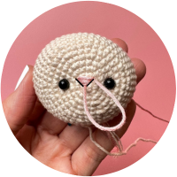
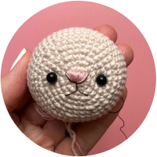
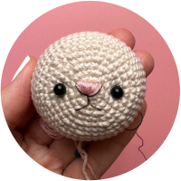
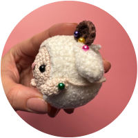
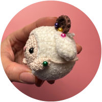

Little Ram Free Crochet Pattern
YARNS:
Finger weight (Category 1) Yarn
I used Hobbii's Rainbow Cotton 8/4 and Hobbii's Boheme Velvet Fine
- Hobbii Rainbow Coton 8/4 Cotton:
- #89 Almond
- #07 Brown
- Boheme Velvet Fine:
- #17614 Snow White
MATERIALS:
- 1.75 mm and 2.50mm Crochet Hooks
- 5mm black safety eyes
- Threading needle
- Stitch markers
- Fiberfill for stuffing
- Pins to place limbs temporarily
- Scissors
- Embroidery Thread in dark brown for mouth and ear details, and pink for nose.
TERMS:
- sl st= slip stitch
- sk st= skip stitch
- FL/FLO= Front loop/front loop only
- BL/BLO= back loop/ back loop only
- sc= single crochet
- hdc= half double crochet
- dc= double crochet
- mc= magic circle
- inc= increase
- dec= decrease
HEAD
Eyes
Attach your safety eyes now at R4 as shown. This will create a space of 8 rounds between each eye.

Nose
With pink embroidery thread, sew nose back and forth as follows, making your thread shorter in length as you move to the bottom.

Now sew over the strands you made in a vertical direction. Start on the right as shown then go to the opposite end and work your way to the first vertical line you made.
With dark brown embroidery thread sew mouth as shown.
 

The vertical line coming down from the nose should be about one round long.
To find how long to make the smile, look to the farthest point of the nose on the right side and extend the smile that same length. Repeat for the left side.
*Begin stuffing the head with fiberfill.
Cut yarn leaving a long enough tail for closing as follows:
Thread your end through a needle. Weave end through the BL of each of the 10 sts remaining. Pull tight and watch the hole close. Weave end.
WOOL

APPENDAGES
Horns (make 2) 1.75mm

Ears (make 2) 2.50mm
Arms (make 2) 1.75mm
ASSEMBLY
Place the horns around R15 of the Wool. Place the ears directly beneath. The arms are placed at R18 beneath the ears.

 
